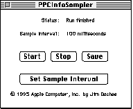

Misalignment occurs when a program accesses data in a way that's
not in sync with the processor's internal paths. This can slow down
performance a little or a lot, depending on the CPU architecture.
But finding these areas in code can be very difficult. We'll
demonstrate the cause and cost of alignment problems and then
show you a couple of tools you can use to detect them in your
programs.
Sometimes Macintosh application performance is limited by architectural factors that
can't be remedied, like the raw speed of the I/O or memory subsystem. But the
programmer does have control over some factors that affect the speed of the memory
subsystem and thus application performance -- such as how data is aligned and
accessed within memory. By default, most compilers will do the appropriate alignment
for PowerPC code. However, alignment options offered for backward compatibility
with the 680x0 architecture can cause significant overhead.
Misalignment is a difficult performance problem to detect. Traditional debugging and
performance tools typically don't help you find misaligned accesses. On top of this,
misalignment problems manifest themselves differently on different CPU
architectures.
In this article, we'll define misalignment, describe how it's caused, discuss the
overhead penalties for accessing misaligned data on various microprocessors, and
introduce some tools designed to aid in the detection of misaligned accesses in code.
These tools accompany the article on this issue's CD and develop's Web site. Armed
with these tools and what you learn in this article, you can perform chiropractic
adjustments on your programs to solve their data alignment problems.
A piece of data is properly aligned when it resides at a memory address that a
processor can access efficiently. If it doesn't reside at such an address, it's said to be
misaligned. In the PowerPC architecture, 32-bit and 64-bit floating-point numbers
are misaligned when they reside at addresses not divisible by 4. Misalignment
exceptions are taken based on the specific microprocessor.
Whether a data item is aligned depends not only on its address and the processor that's
performing the access, but also on the size of the item. In general, data of size s is
aligned if the least significant n bits of its address are 0, where n = log2(s). Hence,
1-byte items are always aligned, while 2-byte items are aligned on even addresses and
4-byte items are aligned if the address is evenly divisible by 4. This alignment policy
is often called natural alignment and is the recommended data alignment for code to run
well on all current and future PowerPC processors.
Accessing misaligned data can be quite costly, depending on the microprocessor your
program is running on. We'll demonstrate just how costly in a minute, but in general,
misaligned memory accesses take from 2 to 80 times longer than aligned accesses on
603, 604, and future PowerPC microprocessors. A misaligned access can require
more time to perform for two reasons:
Misaligned accesses can involve variables located on the stack or on the heap. The type
of compiler and the compiler settings that you use will determine whether misaligned
accesses occur. Improper structure placement and incorrect pointer arithmetic can
also cause misaligned accesses. These problems can be found with the tools and
techniques described below, but this article generally focuses on alignment problems
that aren't caused by programmatic errors.
Most compilers for the Macintosh allow you to choose among various alignment
options. Some compilers default to 2-byte alignment so that data alignment in
PowerPC code mimics alignment on the 680x0 processor. While using this option
means that structures written to disk in binary format can be accessed easily by both
architectures, it also permits alignment problems in the PowerPC architecture. Both
improper structure padding and misaligned stack parameters can result in misaligned
accesses.
IMPROPER STRUCTURE PADDING
When a float field occurs in a structure, improper padding by the compiler will cause
the float field to be misaligned. The example in Listing 1 uses MPW's alignment
pragmas to illustrate this.
______________________________
Listing 1. An example of a poorly aligned structure
#pragma options align=mac68k
typedef struct sPoorlyAlignedStruct {
char fCharField;
float fFloatField;
char fSecondCharField;
} sPoorlyAlignedStruct;
sPoorlyAlignedStruct gPoorlyAlignedStruct;
#pragma options align=reset
______________________________
In this example, a compiler that did no padding would align fFloatField on an offset of
one byte from the structure's base address. Since compilers (and memory allocators)
usually align the base of a structure on a boundary of at least four bytes (and
multiples of four bytes), every access to fFloatField will cause a misalignment error.
Also, fFloatField will be misaligned in statically or dynamically allocated arrays, since
the lengths of structures are padded so that each structure that's an array element
starts on a 4-byte aligned address.
A compiler with a 2-byte padding setting would align fFloatField on an even address,
but this would still cause misalignment when that address isn't divisible by 4.
Compilers using the mac68k pragma (as shown in Listing 1) cause 2-byte alignment,
putting fFloatField on an even but often misaligned address for PowerPC processors.
A compiler with a 4-byte padding setting would always align the field properly.
MISALIGNED STACK PARAMETERS
Besides affecting the alignment of data in a structure, compiler settings can affect the
way data structures are placed on the stack. Consider this function declaration:
void FunctionFoo (sPoorlyAlignedStruct firstParam, float floatParam)
In this example, the parameters are placed on the stack (even though PowerPC
compilers use registers if possible). A compiler using a 680x0 2-byte padding option
may align firstParam.fFloatField on an even address, but if the address isn't divisible
by 4 this will cause a misalignment every time that parameter field is accessed within
FunctionFoo. It won't, however, change the alignment of other parameters on the stack.
On the PowerPC processor, nonstructure parameters are usually placed in registers.
There are no alignment problems when accessing registers.
To demonstrate the cost of misalignments, we've written the code in Listing 2, which
generates both aligned and misaligned accesses in the course of a million iterations. It
accesses a byte array in different ways -- data writes of integers, floats, and doubles
-- and at different offsets. In a portion of the code not shown, accesses are confined to
within a single page of memory, and interrupts are turned off. Running this code
enabled us to calculate the difference in performance between aligned and misaligned
accesses. This code (with slight modifications for the various compilers) was compiled
with the Symantec, MrC, and Metrowerks compilers. All compilers behaved similarly.
______________________________
Listing 2. Generating accesses for comparison of access time
#define kNumAccessesPerCycle 200
#define kNumCycles 5000
// Number of total accesses = kNumAccessesPerCycle * kNumCycles
// 1000000 = 200 * 5000
#define kTableSize 1608 // Table size needed for 200 separate aligned
// accesses on the largest data type (doubles)
typedef enum ECType { eLong, eFloat, eDouble };
void main(void)
{
double AlignedTimeFloat = AlignLoop(0, eFloat);
double Misaligned1TimeFloat = AlignLoop(1, eFloat);
double Overhead1Float =
(((Misaligned1TimeFloat - AlignedTimeFloat) * 100)
/ AlignedTimeFloat);
double avgOverhead1Float =
(Misaligned1TimeFloat - AlignedTimeFloat)
/ kNumTotalAccesses;
...
}
// The function AlignLoop measures the time of a loop of "writes" to
// a byte array. The writes are either aligned or misaligned, based
// on the offset parameter, which should be between 0 and 7. The
// type should be eLong, eFloat, or eDouble.
double AlignLoop(short offset, ECType type)
{
UnsignedWide startTime, stopTime;
double start, stop;
char bytetable[kTableSize];
long j, k;
// Get starting timestamp.
Microseconds(&startTime);
switch (type) {
case eLong:
{
long *longPtr = (long *) &bytetable[offset];
for (j = 0; j < kNumCycles; j++)
for (k = 0; k < kNumAccessesPerCycle; k++)
longPtr[k] = 1;
}
break;
case eFloat:
{
float *floatPtr = (float *) &bytetable[offset];
for (j = 0; j < kNumCycles; j++)
for (k = 0; k < kNumAccessesPerCycle; k++)
floatPtr[k] = 1.0;
}
break;
case eDouble:
{
double *doublePtr = (double *) &bytetable[offset];
for (j = 0; j < kNumCycles; j++)
for (k = 0; k < kNumAccessesPerCycle; k++)
doublePtr[k] = 1.0;
}
break;
}
// Get ending timestamp.
Microseconds(&stopTime);
// Move the values to doubles.
start = (((double) ULONG_MAX + 1) * startTime.hi) + startTime.lo;
stop = (((double) ULONG_MAX + 1) * stopTime.hi) + stopTime.lo;
return stop - start;
}
______________________________
Table 1 shows the results. Overhead is calculated as the percentage difference between
the time required for aligned and misaligned accesses. Our experiments showed that
misaligned accesses at different offsets seemed to pay the same penalty (excluding
cases where the two accesses required to retrieve the data straddle a memory page
boundary, which is every 4K of memory).
Table 1. Misalignment overhead for basic data types, native PowerPC code. Access
times are in (usec).
| CPU and data | Aligned total access time |
Misaligned total access time |
Overhead |
| PowerPC 601 integers | 113439 | 119573 | 5.4% |
| PowerPC 601 floats | 63234 | 94505 | 50.0% |
| PowerPC 601 doubles | 63251 | 113306 | 79.1% |
| PowerPC 604 integers | 687 | 695 | 1.1% |
| PowerPC 604 floats | 261 | 23753 | 9009.0% |
| PowerPC 604 doubles | 262 | 22546 | 8509.5% |
Note: Tests were run at 80 MHz on the PowerPC 601 and 132 MHz on the PowerPC
604.
Misaligned integer accesses result in a relatively small penalty for PowerPC 601,
603, and 604 CPUs. However, there's no guarantee that future microprocessors will
provide hardware support for integer misalignment. Floating-point misalignments are
severely penalized by the 604 implementation. In fact, while a misaligned access takes
1.5 times as long as an aligned access on the 601, it takes more than 80 times as long
as an aligned access on the 604. The 601 pays a penalty only when an access crosses a
page boundary (this will be verified later). Misaligned accesses to doubles on a 601
result in nearly double the overhead of misaligned accesses to floats. On the 604,
however, doubles and floats suffer nearly the same overhead penalty. Misaligned
accesses for doubles occur on any address not divisible by 8 on the 601, and any
address not divisible by 4 on the 604. It's important to note that all memory accesses
(aligned and misaligned) result in some timing penalty.
When we ran these experiments as emulated code (compiled for 680x0), float and
double accesses showed no significant overhead (less than 8%). The 68040LC
emulator doesn't do PowerPC floating-point loads/stores when processing
floating-point data; it avoids alignment exceptions by doing integer emulation of a
floating-point unit and loading and storing data 16 bits at a time.
Our code paints a worst-case scenario; worst case or not, the results indicate that
there's plenty of motivation to avoid misaligned accesses in native PowerPC code.
Perhaps the biggest problem facing the programmer, however, is the detection of these
problems in application code. We'll look now at two tools that are useful for detecting
and pinpointing alignment problems.
Apple's Performance Evaluation Group has developed two tools for detecting
misalignments that cause exceptions:
PPCInfoSampler is useful for determining whether your code has misalignment
problems. If misaligned accesses are detected, the MIL can be used to pinpoint which
parts of your code are causing the misalignments. We'll describe each tool in greater
detail before discussing how to correct misalignments that you identify.
PPCINFOSAMPLER
PPCInfoSampler is a control panel that when activated records information about the
PowerPC exception services and emulator at 100-millisecond intervals. The
information recorded includes counts of mode switches, interrupts, misalignment
exceptions, and page faults. See Table 2 for a list of PPCInfoSampler output categories.
The output saved from PPCInfoSampler is in tab-delimited format and is best viewed
from a spreadsheet program.
Table 2. PPCInfoSampler output categories
| Output category | Explanation |
| Time Delta (millis) | Elapsed milliseconds since last sample of |
| "exception services" registers | |
| Microseconds time | Microseconds (calculated from timebase) since |
| PPCInfoSampler was enabled | |
| Timebase Ticks | A reading of the 64-bit timebase register |
| MixedMode switches | Number of mode switches into PowerPC code |
| Data Page Faults | Number of page faults |
| ExternalIntCount | Number of external processor interrupts |
| MisalignmentCount | Number of misaligned accesses that caused an |
| exception | |
| FPUReloadCount | Number of reloads of the FPU register state |
| DecrementerIntCount | Number of interrupts caused by the PowerPC |
| decrementer register | |
| EmulatedUnimpInstCount | Number of instructions that are emulated in |
| exception services | |
| Timebase Ticks 68k | Number of timebase ticks spent in 680x0 code |
| Timebase Ticks PPC | Number of timebase ticks spent in PowerPC code |
| Level n Int Ticks | Number of timebase ticks that expired per |
| interrupt level | |
| Level n interrupts | Number of interrupts that occurred at each |
| interrupt level |
Note: With the exception of microseconds time, each measurement is per sample and
isn't cumulative with the next interval.
To use PPCInfoSampler, you must first drop it into your Control Panels folder and
reboot. The tool installs code in the system heap that waits for an action to occur. There
are two ways to activate the sampling mechanism:

Figure 1. PPCInfoSampler control panel interface
For our purposes, let's focus on the number of misalignment exceptions. To determine
in general whether you have misalignment problems in your application, think of the
operations or "workloads" (such as saving to disk) that force your application to
access many data structures. Run PPCInfoSampler during these workloads to
determine whether any misalignments are occurring. Any misalignment count greater
than 0 should be investigated and, if possible, corrected.
Table 3 shows an example of a misalignment count generated by PPCInfoSampler. The
program that was being executed during this count displayed bursty misalignment
characteristics. That is, during some 100-millisecond intervals no misalignments
were happening; during other intervals, large numbers were happening.
Table 3. Sample output from PPCInfoSampler
| Milliseconds | Misalignment count |
| 100 | 0 |
| 100 | 0 |
| 100 | 11652 |
| 100 | 43694 |
| 100 | 42931 |
| 100 | 43695 |
| 100 | 43679 |
| 100 | 43705 |
| 100 | 42942 |
| 100 | 31213 |
| 100 | 0 |
| 100 | 0 |
| 100 | 0 |
| 100 | 14510 |
| 100 | 44135 |
| 100 | 44667 |
| 100 | 44470 |
| 100 | 44347 |
| 100 | 44323 |
| 100 | 44303 |
| 100 | 6416 |
| 100 | 0 |
| 100 | 0 |
THE MISALIGNMENT INSTRUMENT LIBRARY
Where PPCInfoSampler allows you to detect misalignment activity in broad
100-millisecond intervals, the Misalignment Instrument Library (MIL) allows you
to then make educated guesses about where to further instrument your code to pinpoint
where the misalignment is happening. The MIL consists of two routines:
void initMisalignRegs(void); // Initializes our misalignment
// counter (do this only once)
unsigned long getMisalignments(void); // Returns the total number of
// misalignment exceptions since
// the initMisalignRegs call
With these calls to the MIL, you can profile strategic portions of your source for the
application's workloads. Iteratively narrow the focus of your profile by moving the
instrumentation in the code until you can determine where the misaligned accesses are
and the structures that they're associated with.
Listing 3 is a sample of application code instrumented with the MIL calls. In this
sample, we use the MIL to display the different floating-point exception-handling
properties of the 601 and 604 CPUs.
______________________________
Listing 3. Sample application code using the MIL
#define kNumAccessesPerCycle 200
#define kNumCycles 5000
#define kTableSize 804 // Table size needed for 200 separate aligned
// accesses on the largest data type (floats)
unsigned long gNumberOfMisalignments = 0; // Misalignments forced by
// program
unsigned long gReportedMisalignments = 0; // Misalignments reported
// by exception services
void main(void)
{
float MisalignedTime = misalignLoop(false);
printf(">*> Forced number of misalignments: %d\n",
gNumberOfMisalignments);
printf(">*> Reported number of misalignments: %d\n",
gReportedMisalignments);
}
// The function misalignLoop measures the time of a loop of "writes"
// to a byte array. The writes are either aligned or misaligned,
// based on the align parameter.
double misalignLoop(boolean align)
{
UnsignedWide startTime, stopTime;
float start, stop;
short alignIndex = (align)?0:1;
// ∑ MIL instrumentation code: initialize misalignment
// counter.
initMisalignRegs();
// Get starting timestamp.
Microseconds(&startTime);
for (long j = 0; j < kNumCycles; j++) {
char bytetable[kTableSize];
float *floatPtr = (float *) &bytetable[alignIndex];
for (long k = 0; k < kNumAccessesPerCycle; k++) {
gNumberOfMisalignments++;
floatPtr[k] = 1;
}
}
// Get ending timestamp.
Microseconds(&stopTime);
// ∑ MIL instrumentation code: get number of misalignments.
gReportedMisalignments = getMisalignments();
// Move the values to doubles.
start = (((double) ULONG_MAX + 1) * startTime.hi) + startTime.lo;
stop = (((double) ULONG_MAX + 1) * stopTime.hi) + stopTime.lo;
return stop - start;
}
______________________________
The results of running this code are shown in Table 4. There's a large discrepancy
between the number of misalignments generated and the number reported by the MIL
on the 601. The 601 architecture internally fixes float and double misalignments in
hardware. However, the 601 can't fix misalignments across page boundaries, so it
takes a misalignment exception. Thus, only those page boundary cases are reported.
The 603/604 architecture doesn't handle misalignments in hardware, and it takes an
exception in all cases.
Table 4. Number of misalignments generated and reported
| CPU | Number of misalignments | Reported number of |
| misalignments | ||
| PowerPC 601 | 1000000 | 120 |
| PowerPC 604 | 1000000 | 1000000 |
You've determined with the help of PPCInfoSampler that you have misalignment
problems in your application. You've used the MIL to determine where the misaligned
accesses are and the structures that they're associated with. Now it's time to think
about these structures.
Is there a reason why they can't be naturally aligned (as we described early in the
article)? If there are structures in the parameter block passed to a Toolbox call,
fields within these structures may not naturally align, but this is something the
programmer can't do much about until the system provides an alternate API. Perhaps
there are binary data files created and accessed from 680x0 legacy code. Is it really
necessary to still be supporting data files formatted to 2-byte alignment? Can you
provide a version mechanism for your data files, such that newer versions write and
read to natural PowerPC alignment? Ask these questions, and naturally align
structures as much as possible.
You can ensure proper structure alignment by ordering the fields in your structures
by hand, from largest to smallest, instead of relying on a compiler to pad the fields.
This will require you to do more work but will remove reliance on any particular
padding strategy.
Another possible scenario is the case where data files are shared across multiple
platforms. Alignment strategies on Intel and other x86 processors aren't the same as
on PowerPC processors. There are two possible approaches to this scenario, given an
application on Windows and one on the Mac OS that share the same data files:
Misaligned memory accesses can take a real toll on your application's performance,
requiring from 2 to 80 times longer than aligned accesses on newer PowerPC CPUs. If
you do what we've described in this article, you can detect and pinpoint misalignments
and fix them so that your code will run efficiently now and on future processors
(which won't include hardware to fix misaligned accesses for any misaligned data
type) and won't be penalized by the lack of hardware support in future
implementations of PowerPC architecture. Isn't it worth a few simple adjustments
now to know that your code's future is secure?
KEVIN LOONEY (looney@apple.com) is a research scientist for Apple's Performance
Evaluation Group, which does performance analysis of applications, systems, and
hardware. He previously wrote performance and debugging tools as part of the Core
Tools Group at Apple. Outside the confines of Apple, Kevin can be found moonlighting as
a pianist/synthesist and Web designer. He mainly ponders two questions in life: why
are things taking so long, and what would cause someone with a degree in artificial
intelligence to study performance issues?*
CRAIG ANDERSON (c.s.anderson@ieee.org) was formerly a senior performance
analyst for Apple's Performance Evaluation Group. He's now at a startup company.
Before working at Apple, he spent many years researching and writing his
best-selling work Improving the Performance of Bus-Based Multiprocessors. Craig
enjoys cooking with Mollie Katzen and praticing katas with sensei Huber. He also takes
delight in reading fine literature, such as The Gulag Archipelago, The Shipping News,
and It's Obvious You Won't Survive by Your Wits Alone.*
Thanks to our technical reviewers Justin Bishop, Dave Evans, and Jim Gochee. The
authors would like to acknowledge the help given by members of the Performance
Evaluation Group (a subgroup of the Architecture and Technology Group in Apple's
Hardware Division), including Marianne Hsiung, Tom Adams, and Scott McMahon. We'd
also like to thank Jim Gochee for his toolsets and valuable insights.*